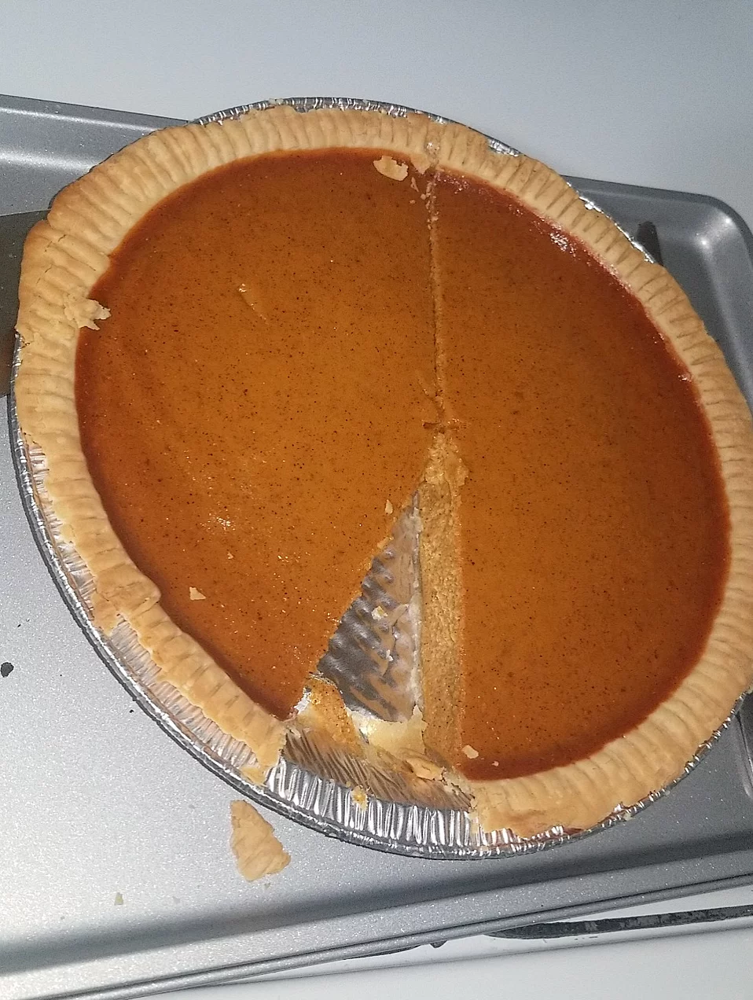

Pumpkin Pie

Description
The following is a recipe for delicious Pumpkin Pie. Enjoy.
- 1 can pumpkin
- Condensed milk
- 2 large eggs
- 1 teaspoon ground cinnamon
- 1/2 teaspoon ground ginger
- 1/2 teaspoon ground nutmeg
- 1/2 teaspoon salt
- 1 unbaked pie crust - 9 inch
Steps
- Preheat oven to 425 degrees F. Whisk pumpkin, sweetened condensed milk, eggs, spices and salt in medium bowl until smooth. Pour into crust. Bake 15 minutes.
- Reduce oven temperature to 350 degrees F and continue baking 35 to 40 minutes or until knife inserted 1 inch from crust comes out clean. Cool. Garnish as desired. Store leftovers covered in refrigerator.